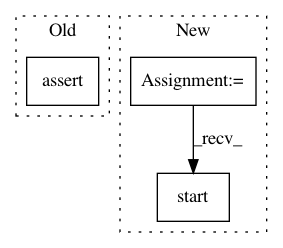

45fd3cabf2a4145b47fa85d1ec380fc3b6ae7609,python/paddle_edl/collective/launch.py,,launch,#Any#,164
Before Change
hdfs = None
edl_env = edl_utils.Edlenv()
assert edl_env.is_under_edl(), "edl launch must run under edl env"
hdfs = edl_utils.get_hdfs_from_args(args)
cluster, pod = edl_utils.edl_barrier(edl_env, hdfs, timeout=15 * 60)
logger.info("get cluster from edl:{}".format(cluster))
After Change
pod = Pod()
pod.from_env(job_env)
pod_server = PodServer()
// port changed in it.
pod_server.start(jobe_env, pod)
logger.info("pod server started:{}", pod)
register, watcher = edl_barrier(job_env, pod, timeout=600)
In pattern: SUPERPATTERN
Frequency: 3
Non-data size: 3
Instances
Project Name: PaddlePaddle/edl
Commit Name: 45fd3cabf2a4145b47fa85d1ec380fc3b6ae7609
Time: 2020-08-06
Author: weibao.gong@gmail.com
File Name: python/paddle_edl/collective/launch.py
Class Name:
Method Name: launch
Project Name: dmlc/dgl
Commit Name: 4f02bb751b312aec02eab82737382f1f94829a4a
Time: 2019-12-29
Author: mctt90@gmail.com
File Name: tests/pytorch/test_kvstore.py
Class Name:
Method Name:
Project Name: keras-team/keras
Commit Name: 71a791cb71ef7080ea150152633a90e7821070af
Time: 2017-09-21
Author: myutwo150@users.noreply.github.com
File Name: tests/keras/applications/applications_test.py
Class Name:
Method Name: test_inceptionresnetv2_variable_input_channels